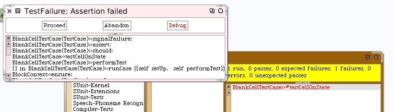

Run Our First Unit Test
Even though we know the answers will be wrong for the #isOn and #isOff instance methods, because we haven't made them do anything but answer a hard-coded "false", we should go back and run the unit test. Enough code has been written on this class already that we want to be sure we created the object we expected and get results expected even when they are wrong.
If you go back to the open menu (from the World menu) you can choose "Test Runner".
The SUnit test runner will open. If you scroll the far left list pane all the way down you will find our Laser-Game-Tests category. Select that and BlankCellTestCase will be highlighted in the adjacent list pane.
If you do not see "Laser-Game-Tests" in the list pane of the Test Runner, you probably made a mistake creating the test case class. The class BlankCellTestCase must be a subclass of TestCase. You may want to go back and check your work from this page.
Click once on the "Run Selected" button and the test runner will execute our new test case and report that it failed.
Click once on the name of the failed test method and a debugger will open.
